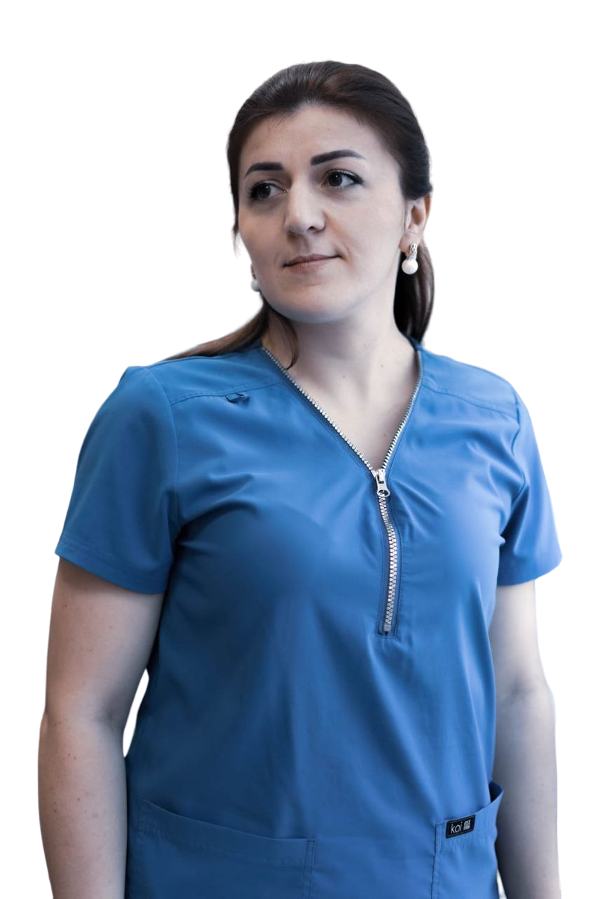

Казимова
Амина
Казимовна
Казимова Амина Казимовна

Детский невролог, нейрофизиолог
- Неврология детского возраста
- Детская эпилепсия
- Дети с нарушением речи
- Проведение ЭЭГ-мониториг
- М-ЭХО
Образование
Опыт работы
Профессиональные интересы:
Детский невролог занимается лечением специфических симптомов, наследственных и посттравматических заболеваний, таких как:
Каждый период взросления ребенка может выявить специфические проблемы нервной системы!
Стоит обращать внимание на гиперактивность, тревожность и задержку развития!